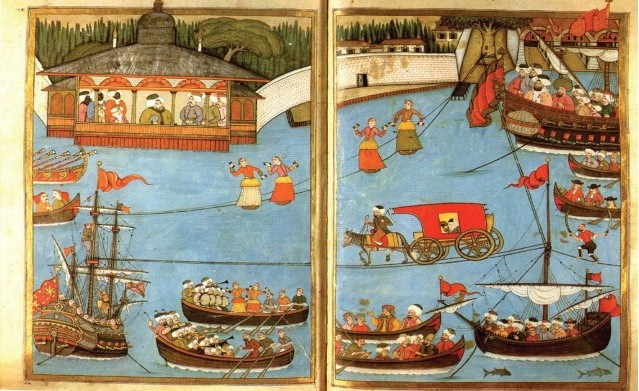

1719 (Hicrî: 1132) yılında Lâle Devri’nin padişahı III. Ahmet; Süleyman, Mehmet, Mustafa ve Bayezit isimlerindeki dört şehzadesi ile İstanbul’dan 5000 fakir çocuğu sünnet ettirmişti. Türlü eğlenceler ve cidden dikkate değer sahnelerle dolu bu muhteşem düğün Okmeydanı’nda olmuş ve on beş gün on beş gece sürmüştü. Devrin sadrazamı da Nevşehirli Damat İbrahim Paşa idi ve düğünün azamet ve ihtişamında onun büyük rolü olmuştu. Düğünü görmeye gelen seyircilerin kayıkları o kadar çoktu ki, denizin yüzeyi kayıkla örtülmüştü, kürekleri kıpırdatmanın bile olanağı yoktu. Gemilerin üstü ise mahşer gibi doluydu.
O gün, deniz eğlenceleri sırasında eski Mimarbaşı İbrahim Efendi’nin timsahı binlerce insanı hayrete düşürdü. İbrahim Efendi tarafından yapılan bu timsah sureti üç tane kürekli sandal büyüklüğünde idi. Üst çenesini açıp kapayarak deniz yüzeyinde yarım saat kadar dolaşmış, sonra denize dalmıştı. Zevkle seyredilen bu timsah çok takdir edilmişti. Fakat bir saat sonra battığı yerden tekrar deniz yüzüne çıkınca, takdirlerin yerini büyük bir heyecan ve hayret almıştı. Açılan ağzından rengârenk giysili beş tane dansçı fırlamış, timsahın sırtına binerek dans etmeye başlamışlardı.
İbrahim Efendi’nin 18. yüzyıl başında yaptığı bu timsahı dünyanın ilk denizaltısı olarak kabul etmek mümkündür.

III. Ahmet’in şehzadelerinin düğün törenini gösteren bir minyatür (Levnî - 18. yüzyıl)